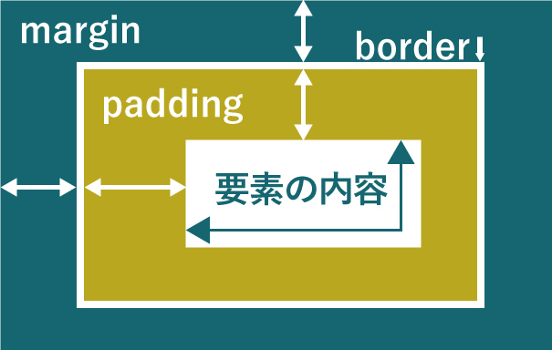
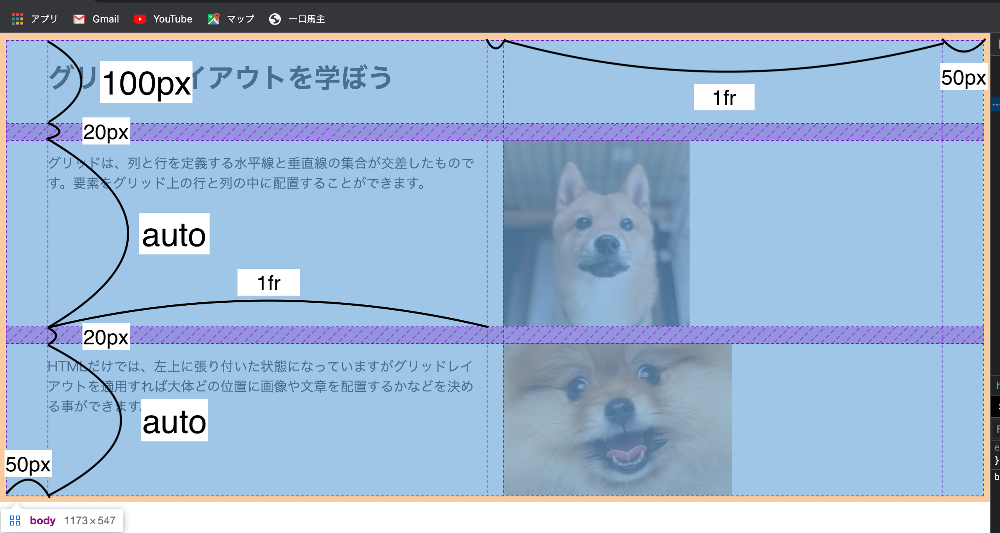
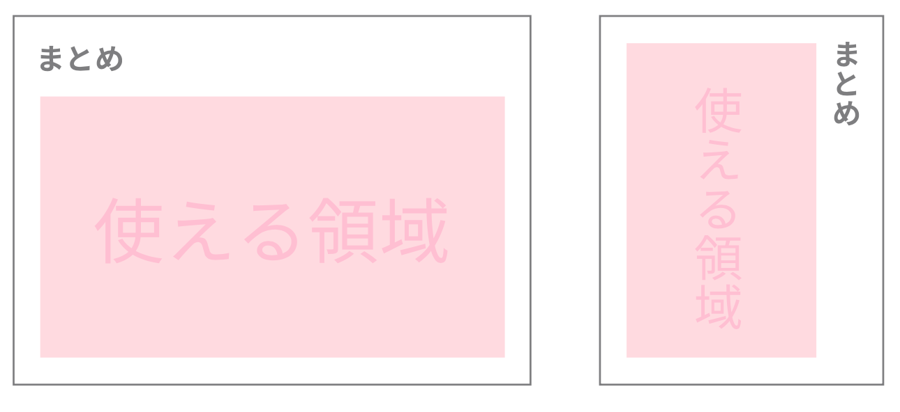
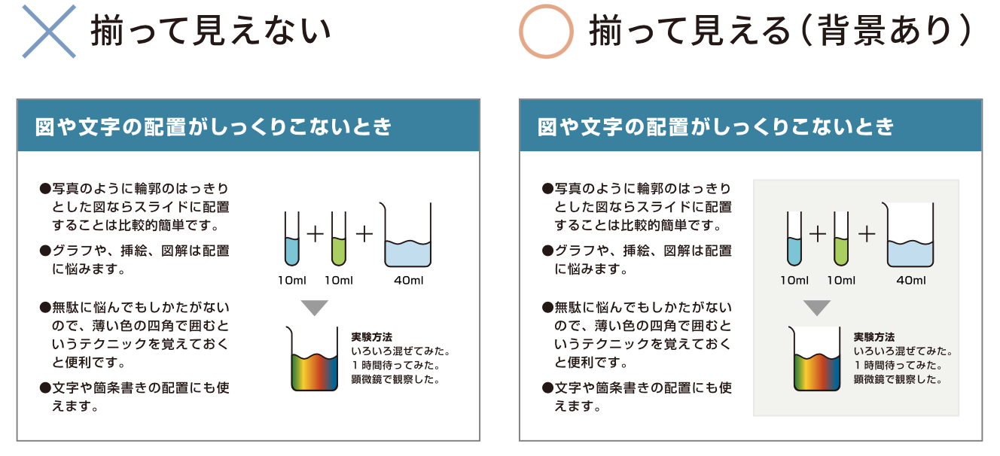
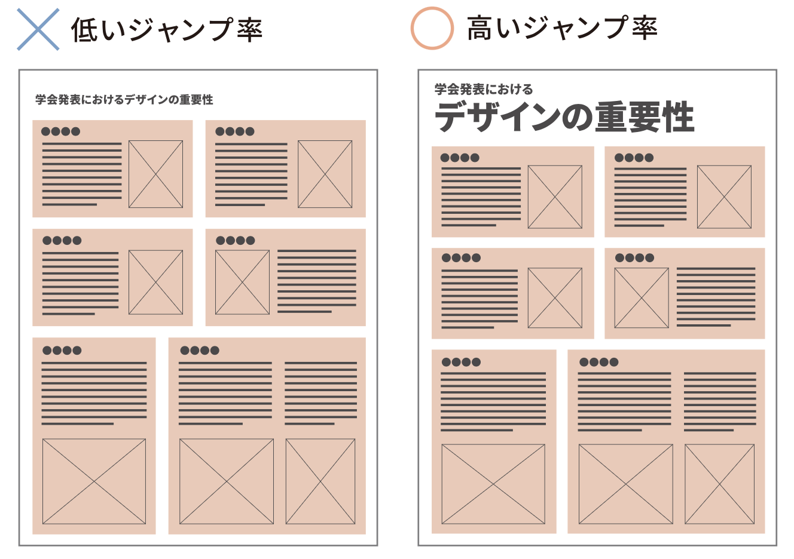

レイアウト
見やすいレイアウト、わかりやすいレイアウトを作るときの重要なポイントは、ただ闇雲に文字や絵を配置するのではなく、発表者の頭の中にある「ロジック」や「事柄と事柄の関係性」に即して文字や絵を配置することです。関係性の強いもの同士は、近くに配置したり、同じ色を使ったり、線で結んだり、大切な事項を目立つ色にしたり、目立つ場所においたり、という簡単なことです。「理論やストーリーをレイアウトする」ことが大切であるということを忘れないでください。
きちんとしたレイアウトをしようとすると、多くの知識や経験が必要になります。とはいえ、近道をしようとして、カッコいいレイアウトのチラシや雑誌をマネしても、決してよいポスターやスライドは作れません。それは、レイアウトのルールを理解していないからです。ここでは、簡単にできる基本的なルールを紹介します。ここで紹介する４つの大きなルールを守るだけで、サイトは大きく変わるはずです。「余白を取る」「揃える」「まとめる」「コントラスト」の４つです。レイアウトの仕方次第で、見やすさや理解しやすさが大きく変わります。
①余白をとる
スライドの周囲、図の周囲には余白を取る

左上のスライドの例を見てください。テキストと図の高さが揃っているのはよいのですが、赤い三角をつけた部分にスペースが少なすぎます。これでは、とても窮屈で、非常に読みにくいスライドになります。では、余白はどのように取ればいいのか、なぜ余白が重要なのかについて説明します。
余白の取り方の基本
むやみに文字を大きくするのではなく、ゆとりをもって配置できるような文字サイズにする。
「文字とスライドの端」、「文字と文字」、「文字と図」の間にはしっかりとスペースを空ける。
余白の重要性
スペースが美しければ、サイトも美しくなります（左上のスライド参照）。最低でも本文の文字の１文字分の余白（右下の図で薄い赤色で示したくらいの余白）を設けるようにしましょう。２文字分くらいの余白をとると、かなりゆったりした資料になり、確実に見やすくなります。研究発表では必要のないことかもしれませんが、余白が多いほどオシャレな印象になりやすいです。
*わざとデザインの面で余白を取らない場合もありますので、必ずしも余白が必要になるわけではありません。
div{
margin: 100px;
}
このように余白を設けたい要素にpaddingやmarginを指定することで要素間で空間を作る事ができます。paddingとmarginの違いについては以下の図を参照してください。
borderは、その要素の縁を囲ったりするときに使うものなので余白を作る時には用いません。borderを指定しない限りどちらで余白をとっても同じと考えても良いでしょう。
Tips
解像度によって異なりますが、1cm＝96pxです。詳しくはCSSの基礎の値と単位についてを参照
余裕をもって配置する
しばしば枠の中に単語や文章を入れることがあります。このとき注意したいのは、文字と枠の間隔です。文字が枠のギリギリになってしまうと、枠の近くの文字が非常に読みにくくなります。 文字は線の要素で、枠線も線の要素であるため、互いに接近したときに干渉し合ってしあうためです。「ギリギリだけど収まったからいい」なんてことはありません。枠の中に、余裕をもって文章を配置しましょう。 では、いくつかの例を挙げて説明します。
文章を枠内に入れる場合

文章を枠内に入れる場合は、上下に１文字分ぐらい余白を確保するといいでしょう。図の場合だと枠の中に余白を作っているのでpaddingを指定します。
p{
padding: 60px;
}
語句を枠内に入れる場合

語句を枠内に入れる場合は、枠は大きめにとりましょう。ちょっとしたことですが、こういった積み重ねが全体の読みやすさを大きく変えます。
具体的な例

枠の中の文字が窮屈すぎると読みにくい上に、印象もよくありません。どうしても枠を大きくできないとか、文字数を減らすことができない場合ならば、少々文字を小さくした方が読みやすいこともあります。*ちなみに、分量（行数）が少ないほど、枠内の余白は少なくてもよいです（スライド全体には１文字分の余白が必要だが、タイトル部分やフローチャートの部分は、0.5〜0.7文字分でも構わない、という意味です）。
②揃える
上のようにサイト全体を格子上に捉えることでそれぞれの要素を配置しやすくなります。それに加えて図の大きさや文章の長さなどを揃えることも印象をかなり良くします。
しかし、新聞記事のように見出しや小さな図が入る場合は、最初のようにグリッドを応用する必要があります。そこで以下ではグリッドレイアウトについて説明します。
グリッドレイアウト
グリッドレイアウトは上の図のようにページを格子状に分割することである程度全体のレイアウトを揃えるcssの方法です。レイアウトの鉄則は全体から細部の順番で作っていく事です。細部のレイアウトから作ると最終的に全体としてバランスが悪くなることが多いです。なのでここで全体レイアウトについて学んでおきましょう。
HTML
<!DOCTYPE html>
<html lang="ja">
<head>
<meta charset="UTF-8">
<link rel="stylesheet" href="grid.css">
<title>グリッドレイアウト</title>
</head>
<body>
<h1>グリッドレイアウトを学ぼう</h1>
<p class="row1">
グリッドは、列と行を定義する水平線と垂直線の集合が交差したものです。
要素をグリッド上の行と列の中に配置することができます。
</p>
<img class="row1" src="dog1.jpg">
<img class="row2" src="dog2.jpg">
<p class="row2">
HTMLだけでは、左上に張り付いた状態になっていますがグリッドレイアウトを適用すれば
大体どの位置に画像や文章を配置するかなどを決める事ができます。
</p>
</body>
</html>
CSS
body{
display: grid;
grid-template-columns: 50px 1fr 20px 1fr 50px;
grid-template-rows:
[head] 100px
[row1] auto
[row2] auto;
row-gap: 20px;
}
h1{
grid-column: 2 / -2;
grid-row: head;
}
.row1{ grid-row: row1 }
.row2 { grid-row: row2 }
p{ grid-column: 2 / 3}
img{ grid-column: 4 / 5}
完成例

上から一つずつ見てみましょう。まずhtmlファイルをみてみると目次や文章や画像などの５つの要素があることがわかります。これらの要素をcssのgridを用いいて大雑把に配置していきます。
まず初めにbodyタグでdisplayプロパティをgridと指定しbodyの中身をグリッドレイアウトモードにします。
次に「grid-template-columns: 50px 1fr 20px 1fr 50px;」で横幅をスペース区切りで指定します。今回は両サイド50pxとりそれを除いた画面をさらに1fr,20px,1frの順に分割しています。
次に行の分割について、行はcolumnsの時と同様に「grid-template-columns: 100px auto auto;」のように書くこともできますが、今回は分かりやすくラインに名前をつけて幅を指定しますラインは[]で囲むことで名前をつけれます。
ここまでを完成図で確認してみましょう。
このままでは完成図のようなものには、なりません。それぞれの要素をそれぞれのセルの中に配置していきましょう。要素の配置にはライン番号を用います。緑の列番号を見ていると左上の列から一つずつ数えます。また最後から「-1,-2」のように数えることもできます。青の行番号も同様です。
<h1>で囲まれる見出し部分は、最終的には一番上の真ん中あたりに表示したいのでcssでh1要素に対して「grid-column: 2 / -2;」を指定します。これは列番号2番目から最後から2番目の列の中に配置するという意味です。さらに行について「grid-row: head;」を指定します。行も列と同様に「grid-row: 1 / 2;」と指定することもできますが今回は行名を指定しているのでそれを用いましょう。
それより下の文章について文章と画像を一つのペアとしてそれぞれのタグにクラスをつけてグループ化します。その為cssでクラスごとに「grid-row: row1;」「grid-row: row2;」と指定することで行を決める事ができます。
文章は左側、画像は右側に表示したいので<p>要素に「grid-column: 2 / 3;」,<img>要素に「grid-column: 4 / 5;」を指定します。これで完成です。グリッドレイアウトはデザインの基本なのでこれ以降のレイアウトのルールを実現するのにたいへん役に立ちます。
タイトルより上に中身を書かない
人は普通、左上から右下に目が動きます。そのため、左上にタイトルをつけた場合、そのタイトルに関連する内容はタイトルよりも右下にある方が読みやすくなります。決して内容をタイトルの真横やそれよりも上に書かないようにしましょう。
収まりの悪いイラストやグラフは四角で囲う
上で説明したようにサイトの要素はできるだけ位置を揃えて配置したほうが見やすくなります。しかし位置を揃えにくい要素や、位置を揃えても揃って見えない要素も存在します。具体的にはイラストやグラフなどは輪郭が曖昧なので、位置を合わせてもフワフワと余白に浮いているように見えてしまいます。このような場合は、要素の背景に薄い灰色(既存の色と同色系)の四角形などを適用すると効果的です。便利なテクニックですが「囲い・枠」が多くなると全体が煩雑になるので汎用は避けましょう。また背景色に濃い色を使うのも美しくありません。
img{
border: 9px solid #00cc00;
}
/*
使い方: border: 枠の太さ 形 色;
border-radius: 枠の太さ; border-style: 形; border-color: 色;
このように個別に指定することもできます。
*/
上の画像のように緑の四角の枠を作ります。一番オーソドックスなやり方です。他にもいろいろな枠の形があります。さらに詳しく知りたい人はborderの公式リファレンスを参照してください。
③まとめる
レイアウトを考える際、伝えたい多くの情報をいかに分かりやすく伝えるかということは重要です。 「情報を読み解く力を付けさせる」のではなく、「情報を伝える」ということに主眼を置いた場合、 視覚的に速く情報を得られるのはユーザにとって評価に値します。 さらに多くの情報は相互に関係性を持っていることがあります。関係性がない情報と、関係性がある情報の ２種類を視覚的に分けるためには、情報同士をまとめるという方法が有効です。 以下では何種類かのアプローチから情報をまとめる方法を記述します。
位置的アプローチ
ー関連のある項目同士を相対的に近づけるー
ここでは情報をどこに配置するかという観点で情報を「まとめ」たいと思います。 他の情報との相対的な配置を変えることによって、関連性の強さを視覚的に明示することが出来ます。 具体的に言えば、関連性が強い情報同士は近くに配置し、関連性が低い情報同士は遠くに配置します。 以下の例のように、文章と画像で対応するもの同士を近づけることでパッと見ただけでその文章が どんな内容の話なのかがすぐ理解できます。


画像と文章、のような対応でなくてもグループ化は可能です。例えば文章と見出し、という関係の場合も、 見出しとそれに関連する文章を近づけることで関連性が視覚的に分かりやすくなります。

色彩的アプローチ
ー同じ色を使ってグループ化ー
ここでは情報をどんな色を用いて表すかという観点で情報を「まとめ」たいと思います。 色という視覚的な共通点や相違点を作りだすことによって、情報という内容の関連性の強さを 明示することができます。具体的にいえば、関連性が強い情報同士に同じ色を用いて、 その情報と関連性が低い情報に違う色を使います。以下の例のように、文章と画像で対応するもの同士の色を同じにすることでパッと見ただけでその文章が どんな内容の話なのかがすぐ理解できます。


このようにして、位置と色彩の観点からまとめる方法を見て、なぜ必要なのか、使うとどうなるかについて 考えてきました。他にもアプローチはありますが、今回紹介したアプローチは非常に重要なものです。
④コントラスト
ジャンプ率を高めてコントラストをつける
「ジャンプ率」とは、本文の文字サイズに対するタイトルや見出しの文字サイズの比率のことです。ジャンプ率が低いと落ち着いた印象になり、ジャンプ率が高いと躍動感のある印象になります。ポスターやスライドでは、通常、タイトルはとても重要です。タイトルには、自分の言いたいことが凝縮してあるからです。下の例のように、タイトルのジャンプ率を高くすればするほど、タイトルが強調されていることがわかります。絶対的な大きさではなく、本文に対する相対的な大きさが、目立ちやすさや躍動感を決めているのです。
アイキャッチャーでさらに魅力的に!
どんなポスターでも、内容を見てもらうためには、まず人の目を引くものでなくてはなりません。歩いている人の目を引くかどうかは、0.3秒で決まるといわれています。この一瞬を逃さないようにポスターを作ると、より効果的なポスターができます。内容で目立つことが最も大切なことですが、見た目で目立つこともある程度重要です。ただし、ただ目立たせればいいという訳ではありません。あまりに派手な色にしてしまうと、いざ読もうとしたときに読みづらいポスターになってしまいます。
そこで、可読性を損なわずに、一瞬で人の目を捉えるための素材が必要になります。このような素材はアイキャッチャーと呼ばれます。文字や図形、イラスト、写真などを効果的なアイキャッチャーにすることができます。例えば、文字の邪魔にならない範囲で背景に大きな絵を入れたり、研究を代表するような写真や絵を大きめに配置することで、人の目を引くことができます。大きい文字も人の気持ちをつかむにはもってこいのアイテムです。タイトルを大きくするのは効果的です。大きな円やギザギザの円は、さらに効果的なアイキャッチャーになります。雑誌の表紙やテレビCMを見ていると、こういったアイキャッチャーが目につきます。そういったものも参考にしながら、好みのアイキャッチャーを配置してみるとよいかもしれません。